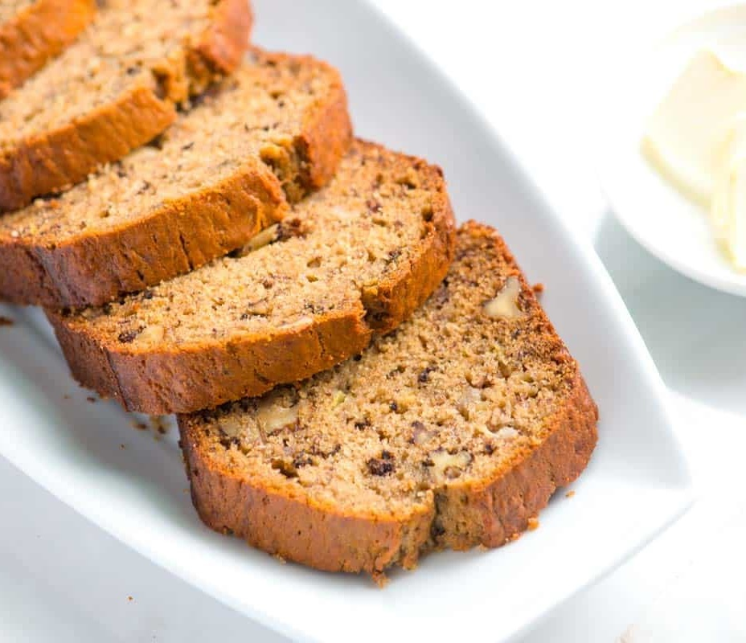

Banana Bread

Banana bread is a beloved classic in the realm of baking,
cherished for its moist texture and sweet, comforting flavor.
This popular quick bread is made with ripe bananas,
which not only add natural sweetness but also contribute to its tender crumb.
The batter typically includes staple ingredients such as flour, sugar, eggs, and butter,
along with baking powder or baking soda to help it rise.
Additional ingredients like chopped nuts, chocolate chips, or spices such as cinnamon or nutmeg can be incorporated to enhance the flavor profile.
Banana bread is perfect for breakfast, brunch, or as a delightful snack any time of day.
Its aroma wafting from the oven is enough to evoke feelings of warmth and nostalgia, making it a timeless favorite in households around the world.
Ingredients
- Flour
- Bananas
- Sugar
- Eggs
- Baking Powder
- Baking Soda
- Salt
- Butter
- Vanilla Extract
- Cinnamon
- Nuts (Optional)
Instructions
- Preheat the oven to 350°F (175°C) and grease a loaf pan.
- In a large bowl, mash the bananas with a fork or potato masher.
- Add the sugar, melted butter, eggs, and vanilla extract to the mashed bananas. Mix well.
- In a separate bowl, combine the flour, baking powder, baking soda, salt, and cinnamon.
- Add the dry ingredients to the wet ingredients and mix until just combined.
- If desired, fold in chopped nuts.
- Pour the batter into the greased loaf pan and bake for 60-65 minutes, or until a toothpick inserted into the center comes out clean.
- Allow the banana bread to cool in the pan for 10 minutes before transferring it to a wire rack to cool completely.
- Slice and serve the banana bread, and enjoy!
arrow_backBack to Home